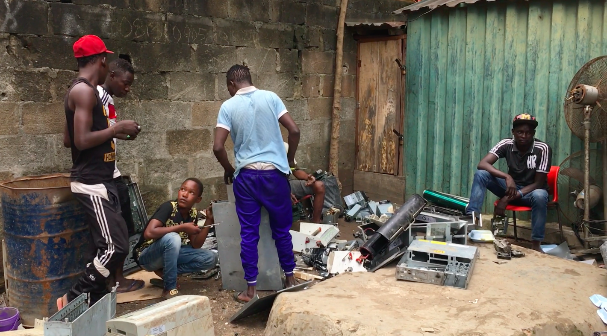
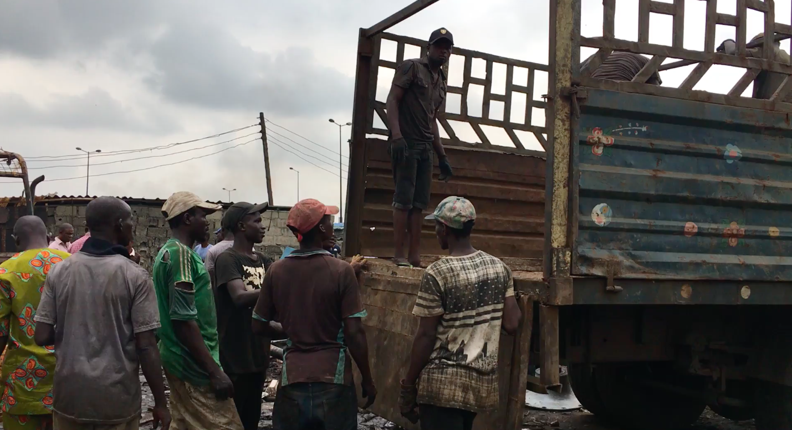
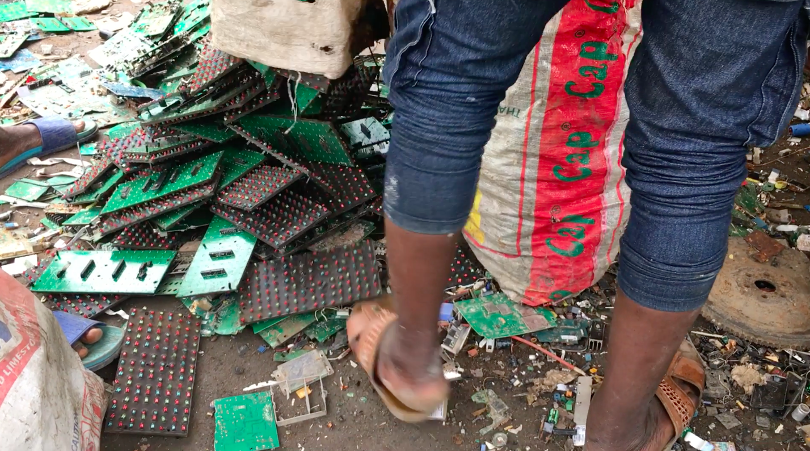
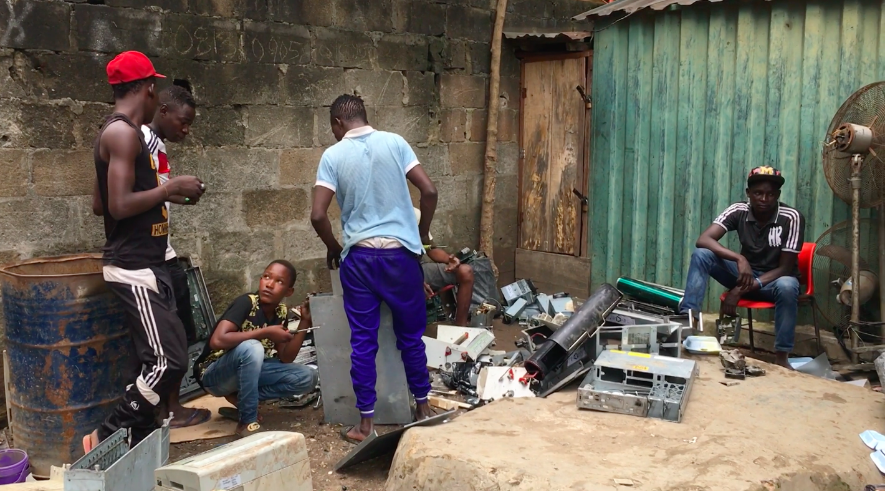
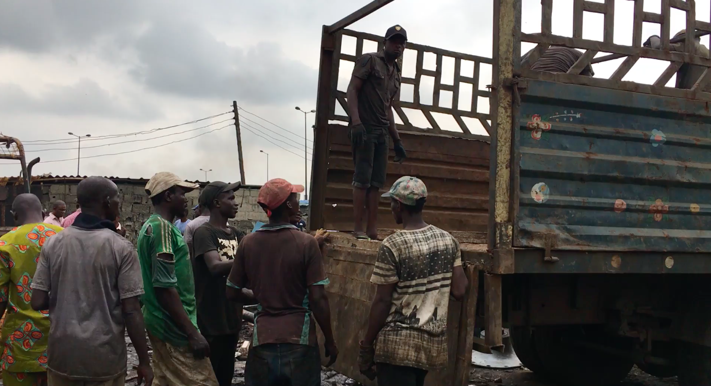
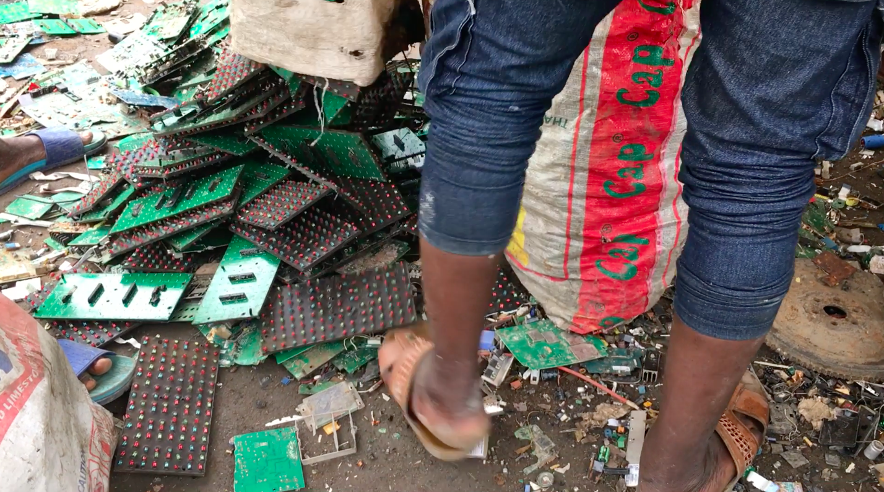

objektbiografie

e-waste
Die Bewältigung der riesigen Mengen von giftigem Elektroschrott gehört zu den grossen Herausforderungen unserer Zeit. Pro Person fallen in der Schweiz jährlich ca. 22 kg elektronischer Abfall an: Das waren 2016 rund 184’000 Tonnen, Tendenz in der Stückzahl steigend, auch wegen der Mobilgeräte. Als e-Waste-Verursachende rangieren die Schweizer_innen weltweit auf dem achten Platz (2014 auf Platz 2).
Trotz vielversprechender technischer Lösungsansätze wird der grösste Teil des Elektronikschrotts weltweit derzeit nicht recycelt. Nur allzu oft wird versucht, das Problem durch Verlagerung in Länder mit niedrigen Umweltstandards zu „lösen“. Doch die Elektroschrott-Produktion beginnt effektiv bereits beim Rohstoffabbau und der Herstellung der Geräte.
Seit der Begriffsdefinition von Green Criminology durch Michael J. Lynch hat die Diskussion an Schärfe gewonnen: Aktivist_innen bezeichnen diejenigen, die die Erde durch die Produktion und Deponierung gefährlicher Geräte und Materialien verschmutzen und somit anderen die Lebensgrundlage entziehen, als kriminell. Ihre Verbrechen sollten verfolgt werden, und auch die Hersteller_innen müssten zur Verantwortung gezogen werden.
Führung Immark Regensdorf 11.5.15; Swico Fachbericht 2017; Global e-Waste Monitor 2017; Nancy Frank, Michael J. Lynch Corporate Crime, Corporate Violence 1992.
Hoboken
Im belgischen Werk Umicore werden verschiedene Arbeiten rund im E-Waste-Recycling durchgeführt: Einerseits rezykliert Umicore Batterien und Akkus von Hybridautos etc., andererseits schmilzt sie Smartphones und anderen e-Waste ein. Bei den Smartphones wird nur das Edelmetall herausgeholt, der ganze Rest landet in der Schlacke. Seltene Erden werden aus E-Waste nicht rezykliert.
(Quelle: Telefongespräch mit Rolf Widmer EMPA, 6.3.2017)
Die durchschnittliche Rate von Goldrecycling liegt bei 15 - 50 %. Wenn man moderne Recycling-Verfahren anwendet wie in der Umicore, lässt sich das praktisch verlustfrei durchführen.
1 Handy enthält 20 - 25 mg Gold, abhängig von Modell und Baujahr, für dessen Gewinnung benötigt man 8.75 kg Gestein.
Mit 40 - 50 Handys lässt sich 1 g Gold gewinnen.
Für einen 1 kg schweren Umicore Goldbarren auf der Metallplatte benötigt man 40000 – 50000 alte Handys.
Quelle: Booklet Ausstellung
Zürich
Abgabe – Abholung – Recycling: Abgabestellen und Recyclingpartner von SWICO Abgabe von Geräten
Privatpersonen können ihre ausgedienten Elektrogeräte im Fachhandel oder an rund 600 Swico Abgabestellen kostenlos abgeben. Von dort gelangen die Geräte direkt zu einem unserer Recyclingpartner und werden fachgerecht auseinandergenommen. Die Abgabestellen dürfen keine Geräte oder Teile davon herausgeben.
Unternehmen können Elektroaltgeräte ab einer Menge von einer SBB-Palette mit 3 Rahmen (ca. 250 kg) oder einem Grossgerät kostenlos durch unseren Transportpartner, die CDS Cargo Domizil AG, abholen lassen.
Über 500 Unternehmen aus Informatik, Unterhaltungselektronik, Büro, Telekommunikation, grafischer Industrie sowie Mess- und Medizinaltechnik haben die Swico Recycling Konvention bis heute unterzeichnet:
http://www.swicorecycling.ch/de/ueber-uns/konventionsunterzeichner
Im Bezug auf die Rücknahme und das Recycling von elektrischen und elektronischen Geräten besteht im europäischen Raum eine Vielfalt an gesetzlichen Richtlinien. Im Januar 2015 hat die WEEE Europe AG die operative Tätigkeit aufgenommen, um Hersteller und Importeure bei dieser Herausforderung zu unterstützen.
Nach der Gründung 2013 zusammen mit neun führenden Rücknahmesystemen – inklusive SENS und Swico Recycling – haben sich sechs weitere Länder und ein Service Partner der WEEE Europe AG angeschlossen.
Die Mitglieder stehen für hohe Prozessqualität und die Einhaltung internationaler Entsorgungsstandards. Die WEEE Europe AG wie auch ihre Mitglieder arbeiten als Non-Profit-Unternehmen kostendeckend.
http://www.erecycling.ch/weee-europe-ag-startet-die-operative-t%C3%A4tigkeit
Abgabestellen und Abholung
Die offiziellen Swico Abgabestellen sind für das Funktionieren des Rücknahmesystems zentral: 58 Prozent der Gesamtmenge von Swico-Geräten werden über Abgabestellen zurückgenommen.
Recyclingpartner von Swico
Recyclingpartner von Swico für fachgerechtes Auseinandernehmen der Geräte – Swico Recycling arbeitet ausschliesslich mit den nachfolgenden qualifizierten Recyclingunternehmen zusammen: http://www.swicorecycling.ch/de/ueber-uns/recyclingpartner Die Immark in Regensdorf ist einer der vielen Recyclingpartner von Swico.
Zerlegebetriebe
Zerlegebetriebe sind Betriebe, welche im Auftrag eines Recyclers vorgelagerte Verarbeitungsschritte vornehmen. Diese umfassen die manuelle Zerlegung der angelieferten Ware sowie gegebenenfalls eine Verdichtung händisch aussortierter reiner Fraktionen zur Transportoptimierung. Zerlegebetriebe haben keine Vertragsbeziehung zu Swico und sind ausschliesslich im Inland tätig. Die Zerlegung kann durch Mitarbeitende aus dem ergänzenden Arbeitsmarkt (Arbeitslosenprojekte, Strafvollzug, Behindertenheime etc.) ausgeführt werden. Zerlegebetriebe werden gemäss den Swico-Vorschriften alle zwei Jahre auditiert. Die Stoffflussdaten der Zerlegebetriebe werden in die Stoffflussdaten des Recyclers integriert.
Zweitabnehmer
Zweitabnehmer sind Unternehmen, welche dem Recycler nachgelagerte Verarbeitungsschritte übernehmen, insbesondere die mechanische und chemische Trennung sowie das Einschmelzen von Fraktionen zur Rückgewinnung von Metallen. In der Regel handelt es sich um hochspezialisierte Unternehmen, die ihren Sitz mehrheitlich im europäischen Ausland haben. Zweitabnehmer haben keine Vertragsbeziehung mit Swico. Recycler müssen gewährleisten, dass die Zweitabnehmer die Swico-Vorschriften einhalten. Die Zweitabnehmersind jährlich im Rahmen der Stoffflussmeldungen zu benennen, damit diese periodisch auditiert werden können. Zweitabnehmer müssen die von den Recyclern angelieferten Mengen im Rahmen von Zweitabnehmeraudits bekanntgeben. Sie werden als Endabnehmer bezeichnet, wenn ihre Funktion darin besteht, einen marktfähigen Sekundärrohstoff zu gewinnen oder die Fraktion energetisch zu verwerten.
Quelle: www.swico.ch
Regensdorf
Die Immark AG in Regensdorf ist eine Recyclingfirma für elektronischen Abfall. Die Verarbeitung der Materialien, die über Swico-Sammelstellen oder direkt zu ihnen gelangen, sieht folgendermassen aus:
- Annahme und wägen des Elektroschrotts, sortieren von Spezialmaterialien
- Separieren von Kabeln (Bleihaltiges usw.)
- Händische Sortierung durch Personen aus dem ergänzenden Arbeitsmarkt (Grobtriage)
- Grobschredder mit Gebläse für Sortierung von Eisen, Leiterplatten etc. (spezifisches Gewicht), grösser als ca. 20x20 cm
- Feinschredder mit komponentenspezifischem Gebläse für Plastik, Alu, Eisen etc. Elektronische Bauteile werden separat aussortiert; die Arbeiter_innen entscheiden visuell, welche Teile in welchen Container gelangen. Eine Arbeitsschicht dauert 8 ½ Stunden, nach einer Stunde erfolgt ein Platzwechsel. Die Sicherheitsstandards verlangen eine jährliche ärztliche Kontrolle, Schutzmasken, Handschuhe und einen Hörschutz, wobei die maximal tolerierte Lautstärke 93dB beträgt. Plastikgranulate werden in Silos gelagert und per Zug abtransportiert. Die während des Prozesses gewonnenen Staubbrickets enthalten Metalle und werden an Betriebe verkauft.
- weitere Feinschredder für Sortierungen
Es besteht die grundsätzliche Problematik, dass auch noch funktionierende Geräte von Gesetzes wegen nicht aussortiert werden können und deshalb zusammen mit den anderen Materialien geschreddert werden. In den erfolgten Materialtransformationen wird also zuerst vermischt und verfeinert, danach werden die Wertstoffe wieder aus den Mischungen extrahiert.
Mobiltelefone sammelt die Immark sammelt nicht spezifisch, und es gelangen auch nicht viele Geräte zu ihnen. Wenn ihnen eine Firma wie verkaufen.ch ihre kaputten Geräte schickt, sind sie oft bereits auseinandergenommen und werden zusammen mit Tablets oder Laptops geschickt, d.h. Handys sind bereits im allgemeinen e-Waste enthalten.
Sind die Geräte nicht bereits auseinandergenommen, werden in der Immark Gehäuse sowie Akkus und Leiterplatten entfernt. Die eidgenössische Prüfanstalt Empa überprüft, dass diese Arbeiten durchgeführt werden.
Grundsätzlich gelangen heutzutage weniger gewichtige elektronische Geräte, jedoch mehr Stückzahlen in den Recyclingprozess. Ökonomisch hat sich die Situation kaum verändert, die Kleinteiligkeit der Geräte benötigt jedoch mehr Aufwand.
(Quelle: Führung Immark, 11.5.15; Protokoll Telefongespräch mit Hr. Leoni, Immark AG)
Nairobi/Kampala
Das Basler Übereinkommen über die Kontrolle der grenzüberschreitenden Verbringung gefährlicher Abfälle und ihrer Entsorgung trat 1989 in Kraft. Es ist ein Umweltabkommen, das den Export gefährlicher Abfälle reguliert.
Nach dem Basler Übereinkommen dürfen Abfälle wie e-Waste nur dann aus Ländern des «Globalen Nordens» in Länder des «Globalen Südens» verbracht werden und umgekehrt, wenn diese Parteistaaten des Abkommens sind. Damit gelten die Regeln des Übereinkommens, das heisst, es muss dort «Stand der Technik»- Recycling-Anlagen geben. Für die Verbringung der Abfälle ist die Zustimmung des importierenden und des exportierenden Landes sowie aller Transitländer notwendig. Diese Einwilligung und Abwicklung geschieht mit einem Notifizierungsverfahren.
Kurz gesagt, das Basler Übereinkommen verbietet den Export von e-Waste in Länder des «Globalen Südens».
Die Schweiz hat das Abkommen 1990 unterzeichnet. Gegen 170 Staaten sind Mitglieder, auch China.
Die USA, die gemäss Wikipedia 80% ihres gefährlichen Abfalls ins Ausland abschieben, haben es nie ratifiziert; somit gelten für sie diese Regelungen nicht.
(Quelle: Booklet Ausstellung)
Kampala
Die Organisation UNIDO baut weltweit Einrichtungen auf, die e-Waste vor Ort rezyklieren, und sich längerfristig v.a. auch dem Recycling problematischer Stoffe, wie Seltenen Erden, widmen wollen. Beispielsweise in Uganda existiert ein e-Waste Center, eine sogenannte ‚dismantling facility’, wo die Schrottmengen effizienter und umweltgerechter entsorgt werden können. E-waste Projekte sind interessant für Donatoren, da sie wegen des immer grösser werdenden Elektronikmarktes in Afrika sehr lukrativ zu werden versprechen. Denn circa 90% der importierten Elektronik-Geräte sind nicht brauchbar, sind von Beginn an e-Waste; für den Import werden oft auch Umdeklarationen der Verursacher vorgenommen, um so die Basler Konvention zu umgehen.
In der dismantling factory in Uganda (in Kampala?) werden die Geräte vor allem von Hand, teilweise auch mechanisch auseinandergenommen. Metalle, die nicht gefährlich sind, werden vor Ort in eigenen Giessereien weiterverarbeitet. Die Weiterverarbeitung der giftigen Stoffe ist jedoch noch nicht geregelt, da die Basler Konvention den Ausfuhr von e-Waste, z.B. zur Umicore in Belgien, verbietet (vgl. jedoch Ruedi Widmers Aussage dazu und Fairphone-Lieferungen von Afrika zu Umicore – oder sind dies zwei verschiedene Dinge?). Zur Zeit bestehen noch keine modernen Aufbereitungsanlagen in Afrika. Hochgiftige Stoffe wie seltene Erden, Cadmium etc. werden exportiert, insbesondere nach Nigeria, wo sie unter schlechtesten Bedingungen weiterverarbeitet werden.
(Quelle: Protokoll Telefongespräch mit Herrn Leuenberger, 12.8. 2016)
Nairobi
Betrachtet man z.B. Abläufe von Smartphone-Recycling in Afrika, sind nicht alle Prozesse und Wege detailliert verfolgbar, wie beispielsweise der weitere Weg nach deren Zerlegung: In Nairobi (Kenia) gibt es einen modernen Zerlegebetrieb. Von dort aus gehen die besser erhaltenen Komponenten nach Europa, die schlechter erhaltenen nach China.
 




